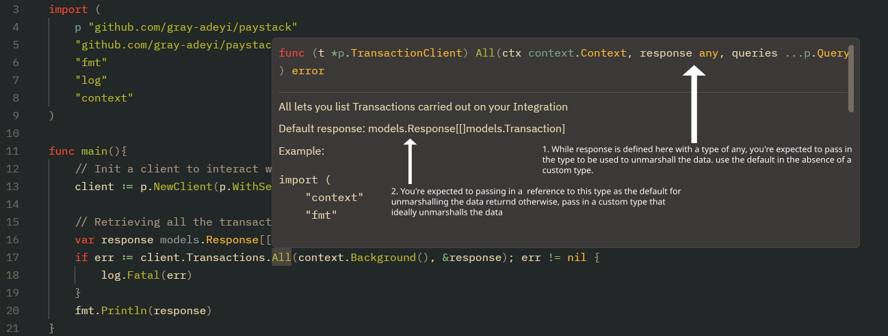

Get Started
Installation
Usage
To use github.com/gray-adeyi/paystack in your Go project, start by
initializing a client and calling any of the available API methods. Here's a
basic example that retrieves all transactions associated with your integration:
package main
import (
"context"
"fmt"
"log"
p "github.com/gray-adeyi/paystack"
"github.com/gray-adeyi/paystack/models"
)
func main() {
// Initialize a Paystack client with your secret key
client := p.NewClient(p.WithSecretKey("<your-secret-key>"))
// Prepare a response model to hold the returned transactions
var response models.Response[[]models.Transaction]
// Retrieve all transactions
if err := client.Transactions.All(context.Background(), &response); err != nil {
log.Fatal(err)
}
fmt.Println(response)
}
Breakdown
Importing the package
- The package is aliased as
pto make function calls cleanerp.NewClient(...)instead ofpaystack.NewClient(...). - The
modelspackage contains all default response types used to deserialize API responses.
You may also need to import the enum package in some cases:
This is especially useful when a method requires enum values as arguments. For
example, if a method accepts a currency enum.Currency argument, you can call
it like:
Initializing the Client
This initializes a new PaystackClient which provides access to all Paystack
services through structured method groupings. Each field on the PaystackClient
maps to a specific service, reflecting the structure of Paystack’s official
REST API.
For example:
client.Transactions.All→ List Transactionsclient.Transctions.Initialize→ Initialize Transaction
Client bindings
The PaystackClient exposes several grouped services, each corresponding to a
major section of the Paystack API. These include:
Field name on PaystackClient |
Client binding | Functionality | Example of methods available |
|---|---|---|---|
Transactions |
TransactionClient |
Provides all the methods for interacting with all the transactions related endpoints | client.Transactions.All, client.Transactions.Initialize, e.t.c |
TransactionSplits |
TransactionSplitClient |
Provides all the methods for interacting with all the transaction splits related endpoints | client.TransactionSplits.Create,client.TransactionSplits.All, e.t.c. |
Terminals |
TerminalClient |
Provides all the methods for interacting with all the terminal related endpoints | client.Terminals.SendEvent, client.Terminals.EventStatus, e.t.c. |
Customers |
CustomerClient |
Provides all the methods for interacting with all the customers related endpoints | client.Customers.Create, client.Customers.All, e.t.c. |
DedicatedVirtualAccounts |
DedicatedVirtualAccountClient |
Provides all the methods for interacting with all the dedicated virtual accounts related endpoints | client.DedicatedVirtualAccounts.Create,client.DedicatedVirtualAccounts.Assign |
ApplePay |
ApplePayClient |
Provides all the methods for interacting with all the apple pay related endpoints | client.ApplePay.Register, client.ApplePay.All, e.t.c. |
SubAccounts |
SubAccountClient |
Provides all the methods for interacting with all the sub accounts related endpoints | client.SubAccounts.Create, client.SubAccounts.All, e.t.c. |
Plans |
PlanClient |
Provides all the methods for interacting with all the plans related endpoints | client.Plans.Create, client.Plans.All, e.t.c |
Subscriptions |
SubscriptionClient |
Provides all the methods for interacting with all the subscriptions related endpoints | client.Subscriptions.Create, client.Subscriptions.All, e.t.c. |
Products |
ProductClient |
Provides all the methods for interacting with all the products related endpoints | client.Products.Create, client.Products.All, e.t.c. |
PaymentPages |
PaymentPageClient |
Provides all the methods for interacting with all the payment pages related endpoints | client.PaymentPages.Create, client.PaymentPages.All, e.t.c. |
PaymentRequests |
PaymentRequestClient |
Provides all the methods for interacting with all the payment requests related endpoints | client.PaymentRequests.Create, client.PaymentRequests.All, e.t.c. |
Settlements |
SettlementClient |
Provides all the methods for interacting with all the settlements related endpoints | client.Settlements.All, client.Settlements.AllTransactions |
TransferRecipients |
TransferRecipientClient |
Provides all the methods for interacting with all the transfer recipients related endpoints | client.TransferRecipients.Create, client.TransferRecipients.BulkCreate, e.t.c. |
Transfers |
TransferClient |
Provides all the methods for interacting with all the transfers related endpoints | client.Transfers.Initiate, client.Transfers.Finalize, e.t.c. |
TransferControl |
TranferControlClient |
Provides all the methods for interacting with all the transfer control related endpoints | client.TransferControl.Balance, client.TransferControl.BalanceLedger, e.t.c. |
BulkCharges |
BulkChargeClient |
Provides all the methods for interacting with all the bulk charge related endpoints | client.BulkCharges.Initiate, client.BulkCharges.All, e.t.c. |
Integration |
IntegrationClient |
Provides all the methods for interacting with all the integration related endpoints | client.Integration.Timeout,client.Integration.UpdateTimeout |
Charges |
ChargeClient |
Provides all the methods for interacting with all the charge related endpoints | client.Charges.Create, client.Charges.SubmitPin, e.t.c |
Disputes |
DisputeClient |
Provides all the methods for interacting with all the disputes related endpoints | client.Disputes.All, client.Disputes.FetchOne, e.t.c. |
Refunds |
RefundClient |
Provides all the methods for interacting with all the refunds related endpoints | client.Refunds.Create, client.Refunds.All, e.t.c. |
Verification |
VerificationClient |
Provides all the methods for interacting with all the verification related endpoints | client.Verification.ValidateAccount, client.Verification.ResolveBin |
Miscellaneous |
MiscellaneousClient |
Provides all the methods for interacting with all the miscellaneous related endpoints | client.Miscellaneous.Banks,client.Miscellaneous.Countries,e.t.c. |
Each of these provides a 1:1 mapping to the relevant sections in the Paystack API refernce, making it intuitive to find and use the features you need.
Response Handling
Next, we define the response variable that will hold the result of the
client.Transactions.All call.
If you're used to APIs where the response is returned directly from the method like this:
...this might feel a little counterintuitive at first.
However, this design choice brings a major advantage: you can use your own custom types for deserialization. This is especially helpful when dealing with unexpected serialization issues, such as missing or misspelled fields in the API response.
Choosing the right Response Type
You might now be wondering: how do I know what response model to use by default?
To answer that, let’s look at the full method call again:
var response models.Response[[]models.Transaction]
if err := client.Transactions.All(context.Background(), &response); err != nil {
log.Fatal(err)
}
All client methods that accept a response parameter are documented with the
default model they expect. If you're using an IDE or code editor with hover
support, you can hover over the method (e.g., All) to view the expected
default type.
 Click on image to zoom in
{kind=link}
This allows you to either use the package’s built-in models (like
models.Transaction) or define your own if needed—giving you both
convenience and flexibility.
Custom Response Types
When you hover over a client method like All, you’ll see a line like this in the documentation:
Default response:
models.Response[[]models.Transaction]
This means the package uses []models.Transaction as the default type for
deserializing the data returned from that method call.
This design also gives you the flexibility to override the default model and use your own custom type when necessary—especially in cases where:
- A field is missing or misspelled in the default model
- You need additional fields not provided in the built-in type
Understanding models.Response[T]
The models.Response[T] type is a generic struct that wraps around the data
returned by the Paystack API. Here’s what it looks like:
// Response is a struct containing the status code and data retrieved from Paystack.
type Response[T any] struct {
StatusCode int // HTTP status code returned from Paystack
Status bool `json:"status"`
Message string `json:"message"`
Data T `json:"data"` // The actual data payload
Meta *Meta `json:"meta"`
Type *string `json:"type"`
Code *string `json:"code"`
Raw []byte // Raw response body
}
You can technically use your own response wrapper, but in most cases this is
unnecessary. The key advantage lies in customizing the T in Response[T].
Why and When to Use a Custom Type
Let’s say the default response type is:
And models.Transaction in this package looks like this:
You notice that the Reference field isn’t being populated because of a
misspelled tag ("refernce" instead of "reference"), and the model is also
missing an Amount field that’s returned by the API.
To fix this, you can define your own model:
type CustomTransaction struct {
Id int `json:"id"`
Reference string `json:"reference"`
Amount int `json:"amount"`
}
Then use it like so:
var response models.Response[CustomTransaction]
if err := client.Transactions.All(context.TODO(), &response); err != nil {
log.Fatal(err)
}
That’s the added flexibility! You don’t have to wait for upstream fixes for simple marshaling issues—you can resolve them instantly by defining your own type.
💡 If you do encounter issues like this, please consider reporting them here so they can be fixed for others as well.
Client Methods with Optional Parameters
Some client methods in this package accept variadic arguments defined as either:
queries ...Query— for modifying URL query parametersoptionalPayloads ...OptionalPayload— for adding optional fields to the request body that are not required method parameters
To support these, the package provides two helper functions:
paystack.WithQuery(key string, value string)paystack.WithOptionalPayload(key string, value any)
Example: Using WithQuery
The method client.Transactions.All accepts variadic Query parameters. You
can pass them like this:
if err := client.Transactions.All(
context.TODO(),
&response,
p.WithQuery("perPage", "50"),
p.WithQuery("page", "2"),
); err != nil {
log.Fatal(err)
}
This example sets:
perPage=50: limits results to 50 transactions per requestpage=2: retrieves the second page of results
The keys (e.g., "perPage", "page") are based on the
Paystack API reference, and the values
must be strings.
Example: Using WithOptionalPayload
For request bodies that support optional fields, the WithOptionalPayload
function works similarly, but accepts values of any type:
if err := client.Plans.Create(
context.TODO(),
"Monthly retainer",
500000,
enum.IntervalMonthly,
&response,
p.WithOptionalPayload("description","a test description"),
); err != nil {
log.Fatal(err)
}
Here, the description field is optional and not part of the required method
arguments, so it's passed using WithOptionalPayload.
Conclusion
If you find this package helpful, consider giving it a ⭐️ on GitHub. It helps make the project more visible to other developers who might benefit from it.
Want to show extra support? You can buy me a coffee ☕ — your support helps keep the project alive and improving!
Also, be sure to check out the examples section for more use cases.